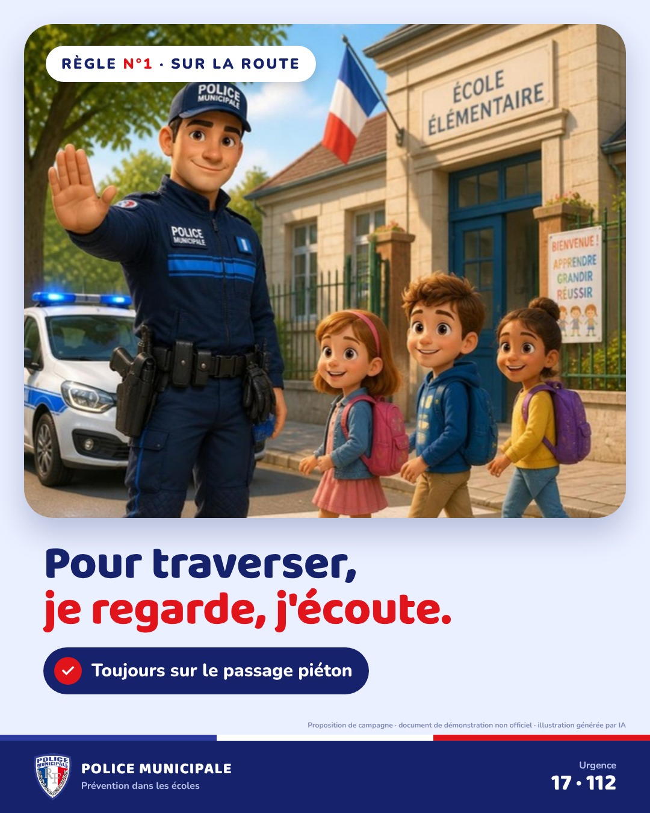
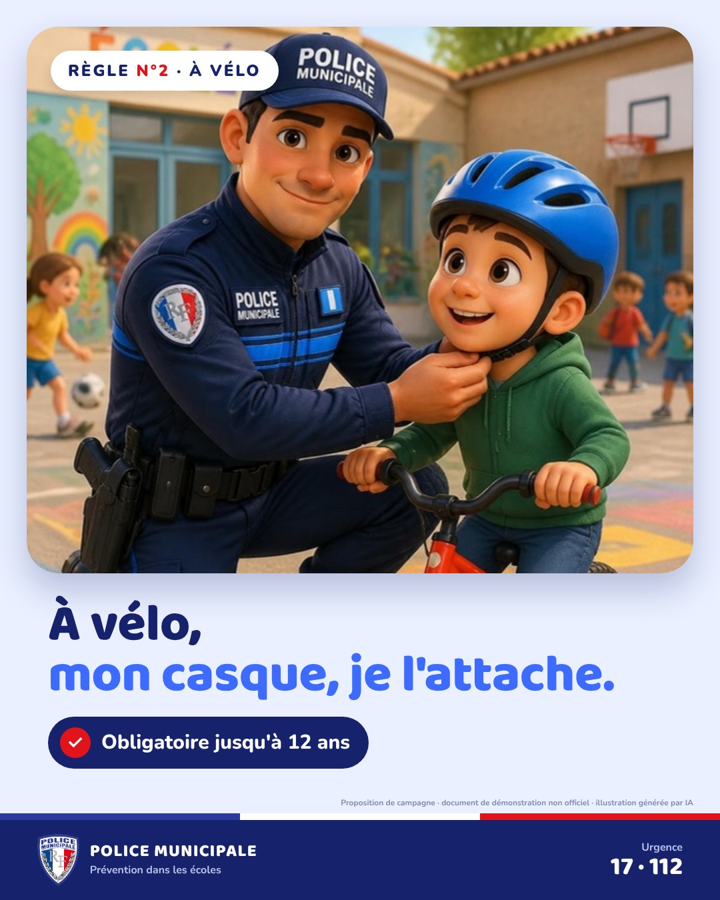
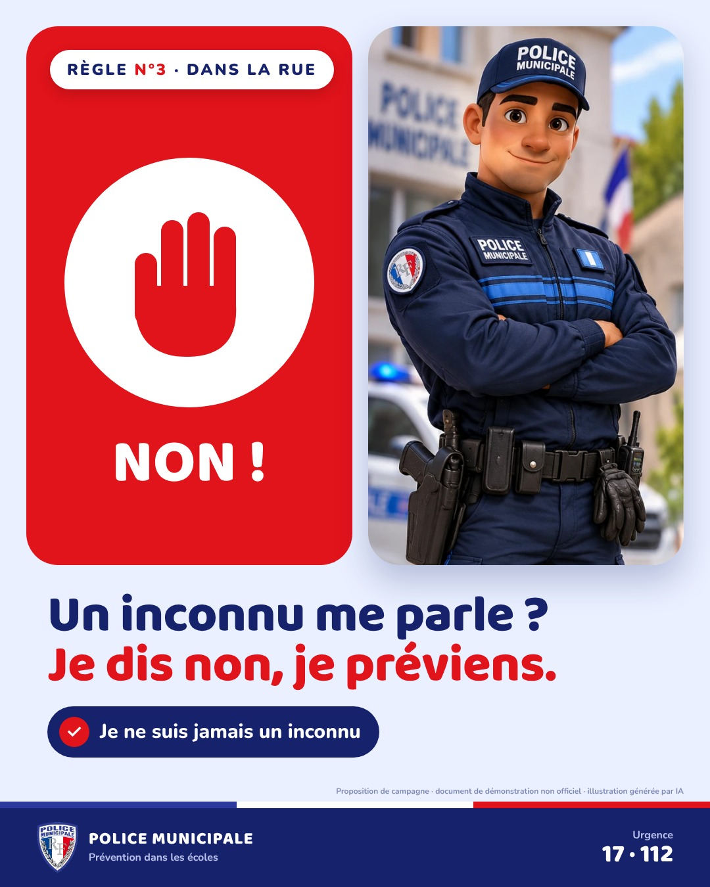
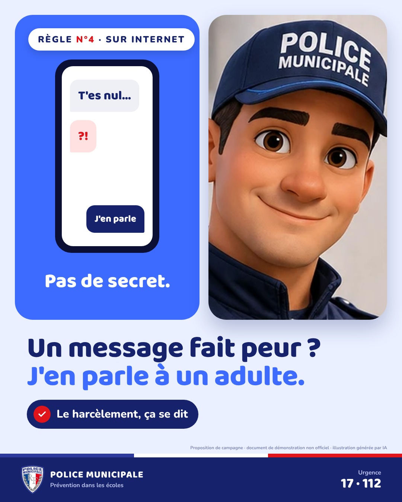
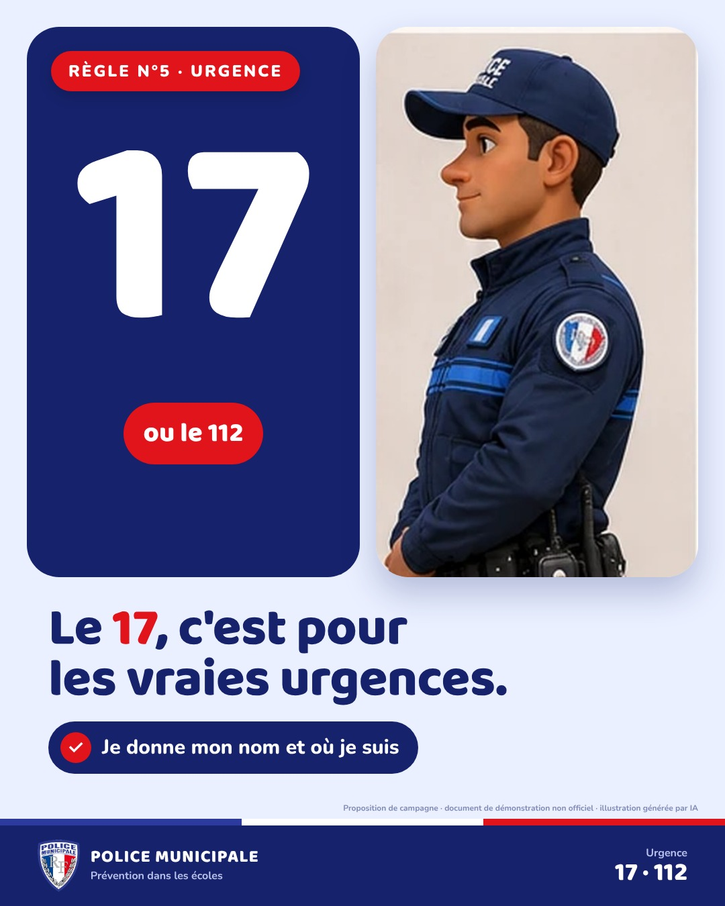
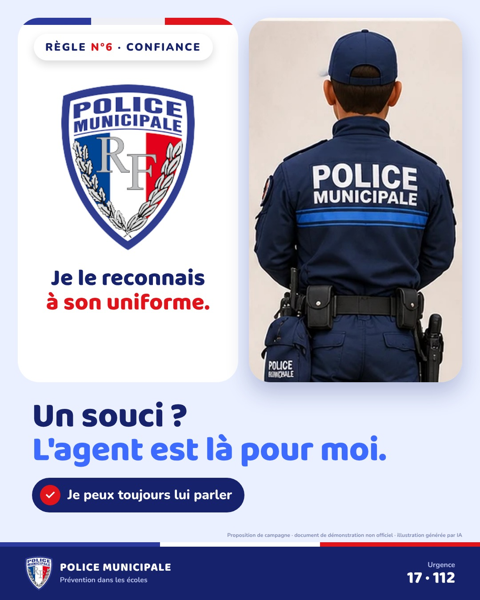

Campagne de prévention · écoles
6 règles
pour grandir
en sécurité.
Une série d'affiches pour les écoles primaires, avec un agent de police municipale comme personnage repère : sécurité routière, vélo, inconnus, internet, numéros d'urgence et confiance.
Proposition de campagne E-DUST Solutions · document de démonstration non officiel · illustrations générées par IA avec Canva

01 · Traverser

02 · Le casque à vélo

03 · Les inconnus

04 · Internet et harcèlement

05 · Le 17

06 · Confiance